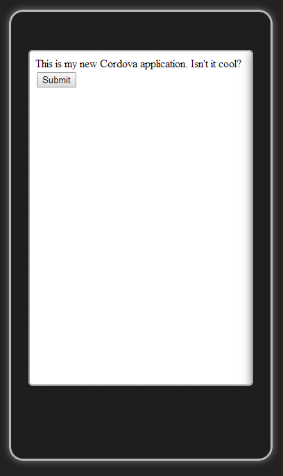

Using Cordova and Ionic
To Create Multiplatform Mobile Apps
AngularJS DC
Agenda
|
|
|
|
|
|
|
|
Q: Cordova: Is it PhoneGap?
A: Sorta
Cordova
Advantages
- Write HTML5 app, run on multiple platforms.
- Only code the business logic ONCE.
- Is it or isn't it?
- Runs in a built-in browser called WebKit (on iPhone) or Chromium (Android).


Cordova
Disadvantages
- You still have to understand your platform.
- You still might have to write native code, depending on whether there's already a plugin.
- Different platforms - different browsers.
Cordova
Plugin Architecture
- Plugins expose the native api of the mobile device.
- Sometimes you'll need a plugin for a task that you might take for granted in other platforms.
- PhoneGap is a plugin!
Cordova
Install a Plugin
C:\dev\ctamobile>cordova plugin add https://github.com/phonegap-build/PushPlugin.git
Fetching plugin "https://github.com/phonegap-build/PushPlugin.git" via git clone
Installing com.phonegap.plugins.PushPlugin (android)
List Your Plugins
C:\dev\ctamobile>cordova plugins list
[ 'com.phonegap.plugins.PushPlugin',
'org.apache.cordova.console',
'org.apache.cordova.device',
'org.apache.cordova.geolocation',
'org.apache.cordova.inappbrowser',
'org.apache.cordova.statusbar' ]
Cordova
Project Structure

- Native code under "platforms"
- The "magic method" cordova.exec() maps to native functions, in the target framework.
- On Android, JavaScript exec() calls Java class execute()
Running the Cordova App
- In the browser!
- Ripple
- Just attach your phone (Android)
- Add the id of your phone and Test Flight code to your app, sign up for Test Flight and set up an account, upload your app there, download it and you're all set! (iPhone)
A classic dialog box

Demo
Cordova Hello World
OK, so now you're a Cordova expert.

What's next?
Need Some Style?
Intergalactic Interconnections
You can link between slides internally, like this.
Fragmented Views
Hit the next arrow...
... to step through ...
any type- of view
- fragments
Fragment Styles
There's a few styles of fragments, like:
grow
shrink
roll-in
fade-out
highlight-red
highlight-green
highlight-blue
current-visible
highlight-current-blue
Spectacular image!

Export to PDF
Presentations can be exported to PDF, below is an example that's been uploaded to SlideShare.
Take a Moment
Press b or period on your keyboard to enter the 'paused' mode. This mode is helpful when you want to take distracting slides off the screen during a presentation.